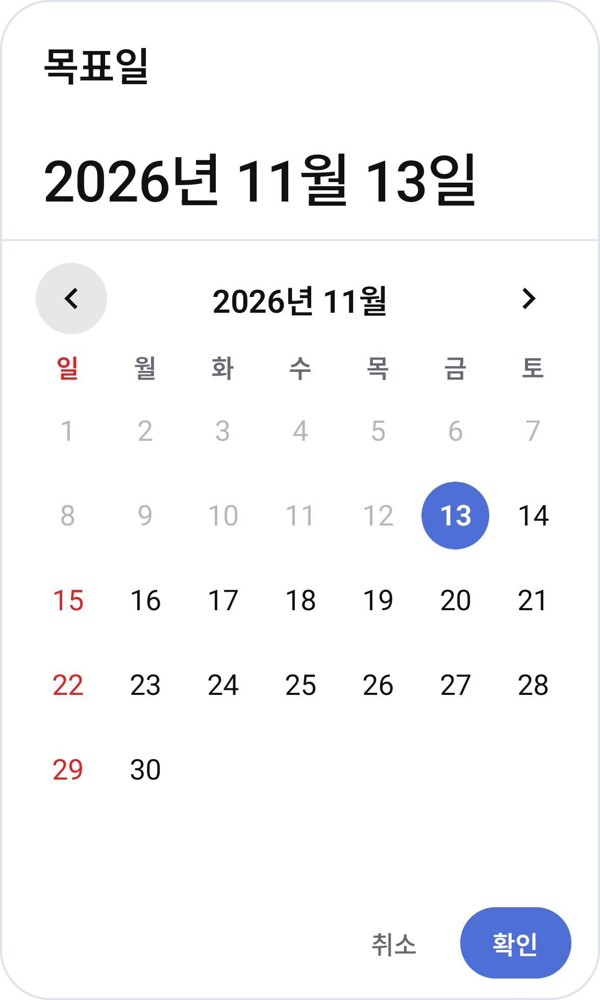
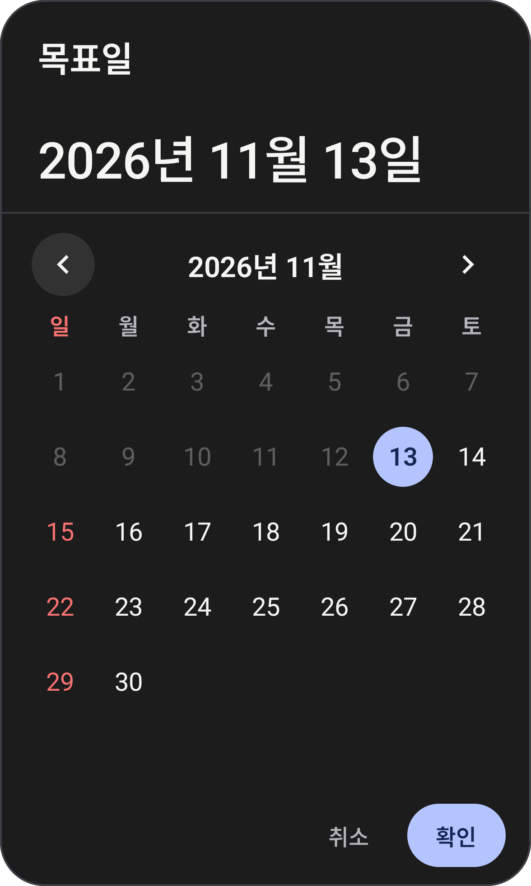

WidgetEditorDatePickerDialog
목표일과 날짜 연결의 달력 날짜를 선택합니다.
- 컴포넌트 ID
widget-editor-date-picker-dialog- 분류
- 입력
- 구현
WidgetEditorDatePickerDialog·MyWidget/app/src/main/java/com/mywidget/editor/core/designsystem/component/WidgetEditorDatePickerDialog.kt:67- 주요 API
- title, selectedDate, initialDate, isDateSelectable, onDateSelected, onDismiss
- 지원 상태
- 오늘
- 선택
- 비활성 날짜
- 달 이동
- 변형
- 선택 범위 제한 가능
- 현지화된 월·요일
- 크기
- 최대 폭 336dp
- 테마·토큰
- MaterialTheme.colorScheme
- WidgetEditorPopupTokens
- 시스템 로캘
- 접근성·사용 규칙
- 전체 날짜를 접근성 이름으로 제공하며 달 이동과 선택은 별개의 조작입니다.
- 공통 사용 여부
- D-Day 텍스트·진행률 목표일에서 사용
- 설계 품질
- 앱 날짜 입력에 집중하고 AppWidget 달력 렌더링과 별개
- 판단
- 유지
- 판단 근거
- 요일·선택 가능 날짜·로캘 처리 계약을 보호합니다.
- 구현·문서
- 현재 소스 위치와 심볼 확인
- 렌더링
- 네이티브 캡처 있음
코드 예시
val date = LocalDate.of(2026, 11, 13)
WidgetEditorDatePickerDialog("목표일", date, date, { !it.isBefore(date) }, {}, {})Android 네이티브 예시
아래 캡처에 표시된 상태와 기기 조건을 확인했습니다.

411 × 891 dp · 560 dpi · 글꼴 1배 · API 35 · ko-KR
캡처 기준 HEAD
ff118cc8d · 소스 지문 73da2a0be891 · 2026-11-13T10:23:11.274577Z
411 × 891 dp · 560 dpi · 글꼴 1배 · API 35 · ko-KR
캡처 기준 HEAD
ff118cc8d · 소스 지문 73da2a0be891 · 2026-11-13T10:23:11.274577Z